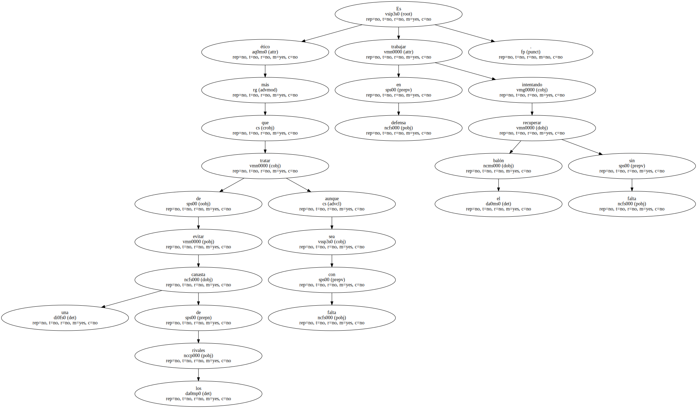
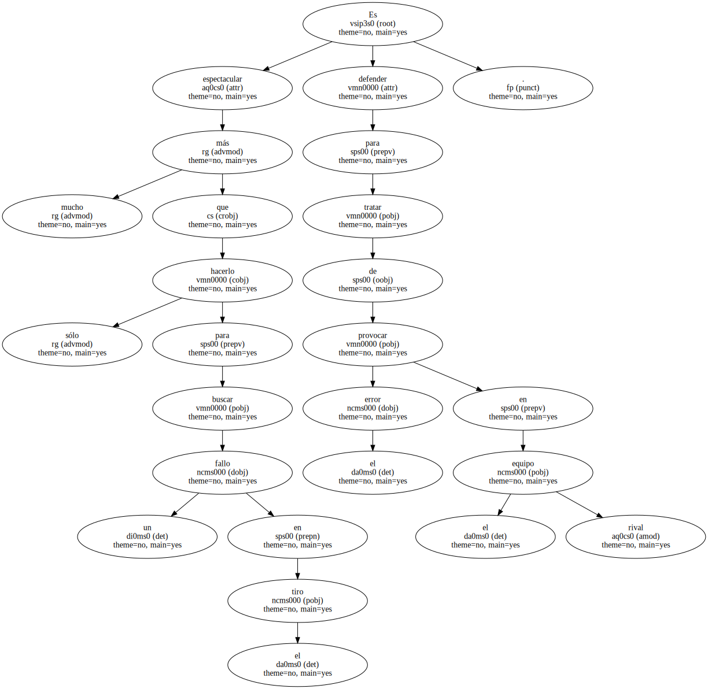
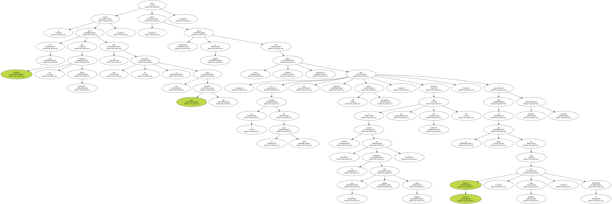
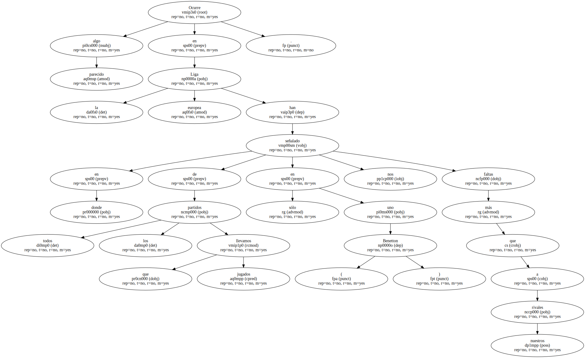
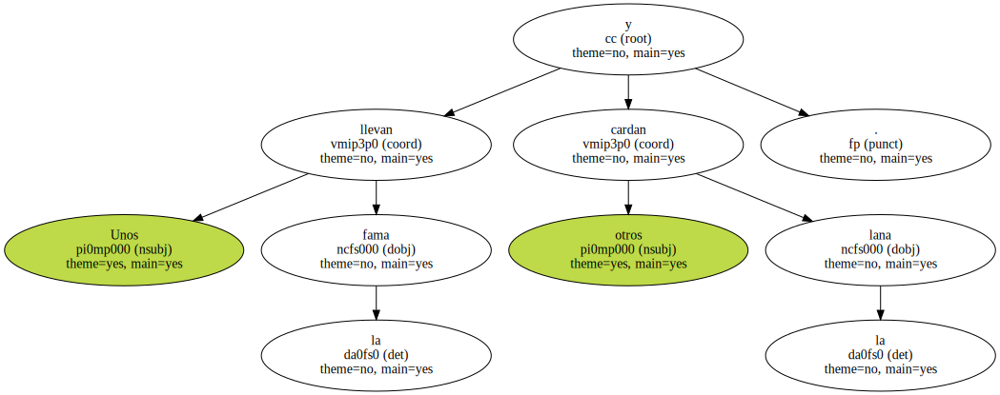
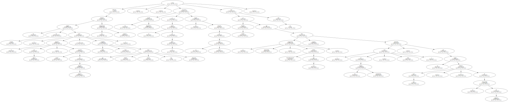
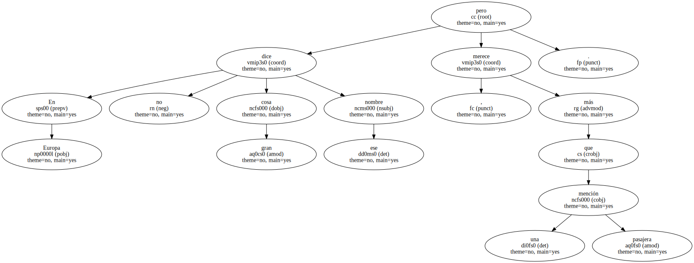
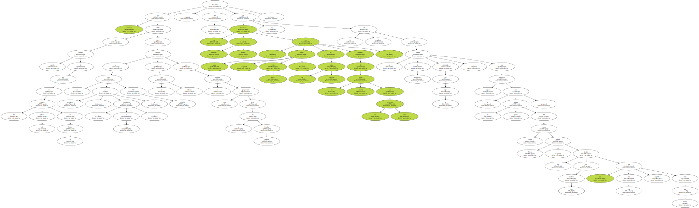
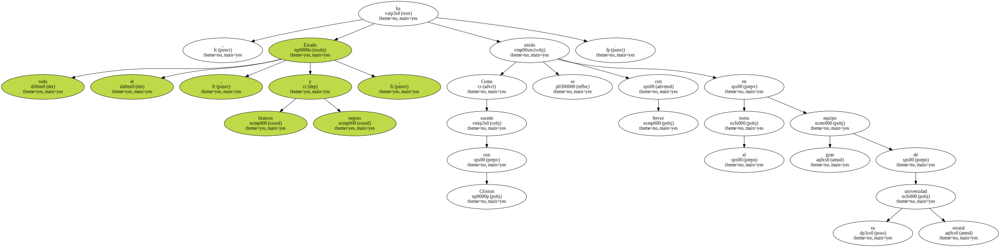
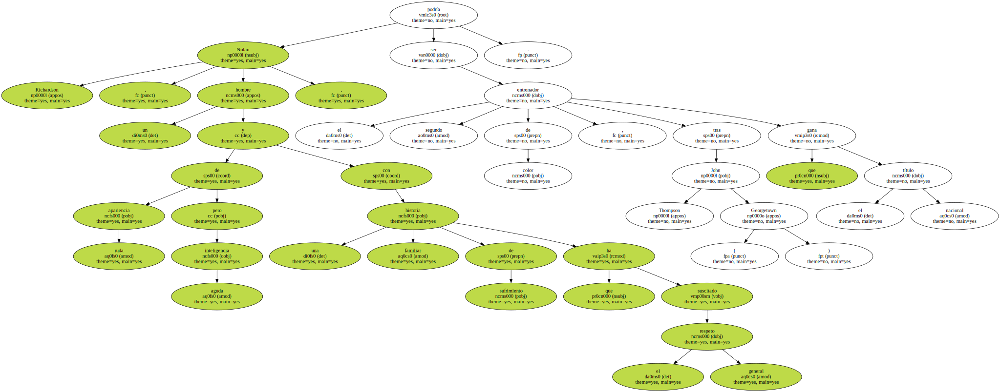

Es más ético trabajar en defensa intentando recuperar el balón sin falta que tratar de evitar una canasta de los rivales aunque sea con falta.
Es mucho más espectacular defender para tratar de provocar el error en el equipo rival que hacerlo sólo para buscar un fallo en el tiro.
Con esto no quiero decir que nosotros no hagamos faltas personales , ya que aún no lo hacemos todo lo bien que me gustaría , pero quiero hacer reflexionar a algunos con unos simples datos estadísticos : en los 17 partidos de la Liga ACB nos han señalado 396 faltas personales , mientras que a nuestros rivales ( en los partidos que han jugado contra nosotros ) les han señalado 437 , a pesar de que se habla bastante a menudo de que nuestra defensa , como mínimo , roza la ilegalidad.
Ocurre algo parecido en la Liga europea en donde de todos los partidos que llevamos jugados sólo en uno ( Benetton ) nos han señalado más faltas que a nuestros rivales.
Unos llevan la fama y otros cardan la lana.
Mientras los equipos de siempre ( salvo el Stefanel de Trieste , creación genial de Bogdan Tanjevic , y algún candidato turco que todavía tiene mucho que demostrar ) dominan las competiciones europeas , en Estados Unidos no sólo caracolean los Seattle SuperSonics a la cabeza de la NBA tres lustros después de su único título , sino que la competición universitaria , extraordinariamente abierta este año , lleva semanas dominada ( en los ránking extraoficiales , claro está ) , por un equipo muy poco habitual : el de la Universidad de Arkansas.
En Europa no dice gran cosa ese nombre , pero merece más que una pasajera mención.
Arkansas ha salido del letargo sureño de uno de los Estados más pobres de la Unión para mandar a su hijo predilecto ( y , a ratos , casquivano ) Bill Clinton a la Casa Blanca con el mandato más progresista desde el de Lyndon Johnson , sino que este territorio atrasado y racista ( cuya capital , Little Rock , fue en los años cincuenta símbolo de la cruenta lucha por los derechos civiles ) , es hoy la orgullosa sede de un equipo de baloncesto entrenado por un negro , con jugadores negros ( más la pálida guinda del escolta croata Davor Rimac , un tirador de dos metros que este año está jugando más que nunca ).
Un equipo de férrea disciplina defensiva , fulgurante velocidad en ataque que le permite doblegar a casi todo el mundo , un banquillo rico y eficaz.

Como sucede con Clinton , todo el Estado , blancos y negros , se ha unido con fervor en torno al gran equipo de su universidad estatal.
Nolan Richardson , un hombre de apariencia ruda pero aguda inteligencia y con una historia familiar de sufrimiento que ha suscitado el respeto general , podría ser el segundo entrenador de color , tras John Thompson ( Georgetown ) que gana el título nacional.
